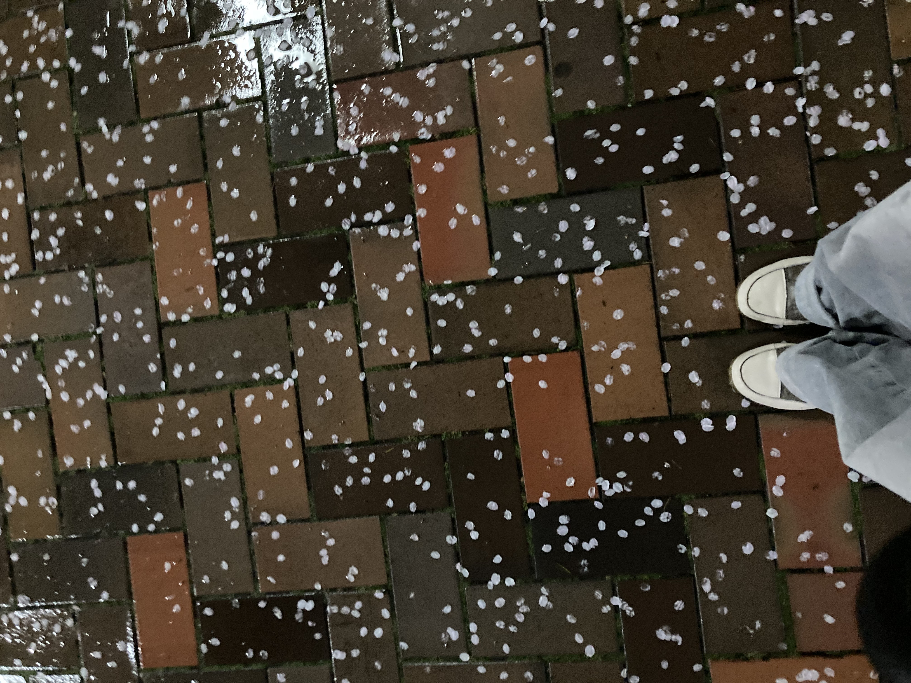
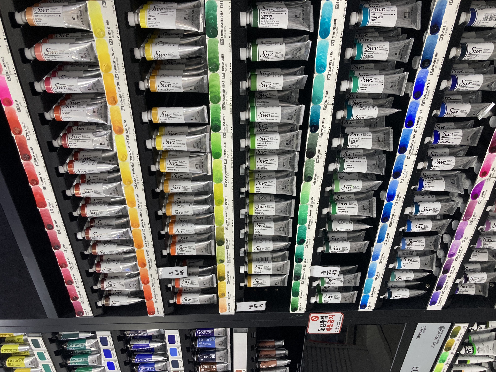
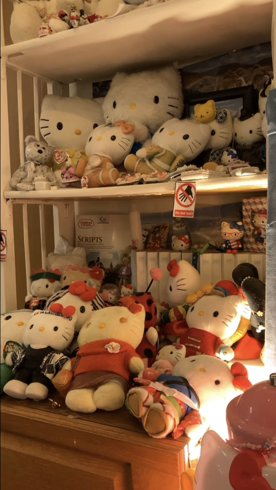
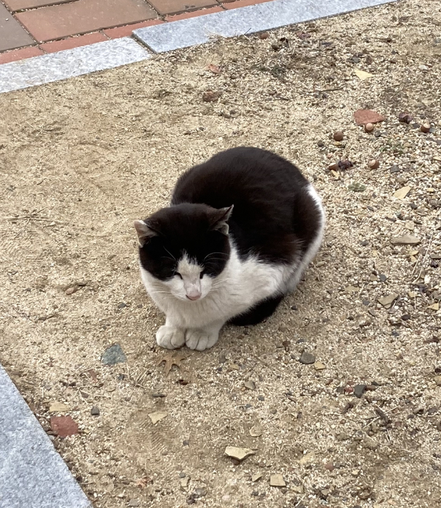
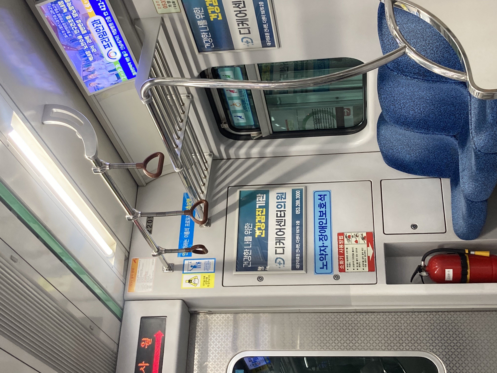
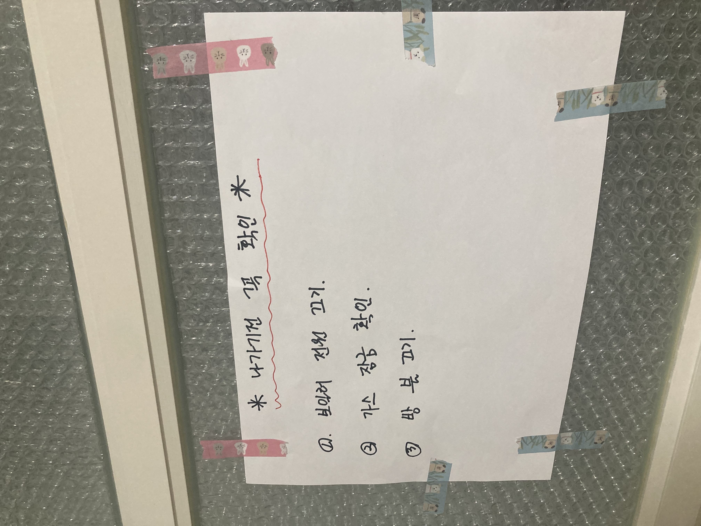
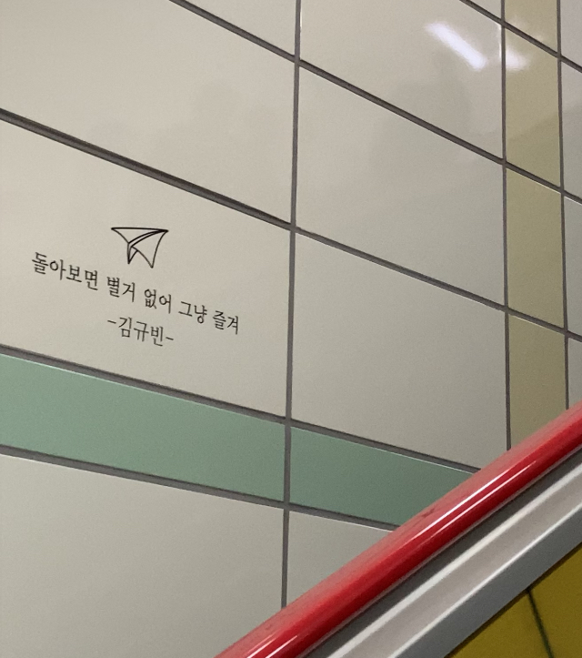
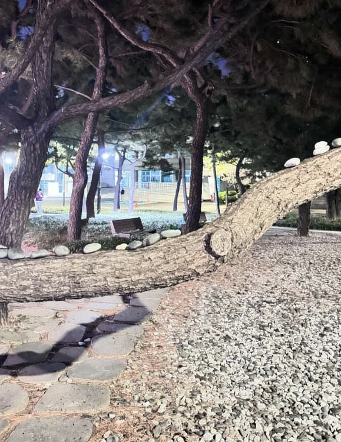

비 내린 후
늦은 밤 친구들과 과제 후 영남대학교 정문 앞에서 찍은 벚꽃잎이다. 이날 비가 조금씩 내려 며칠 전 만개한 벚꽃잎이 많이 떨어졌다. 여러 개의 벚꽃잎이 떨어진 모습이 마치 하늘에서 내린 눈송이 처럼 보인다. 또한 어두운 갈색 캔버스 위에 흰색 점을 찍은 작품으로도 느껴진다. 비가 오기 전에는 벚꽃이 질 수도 있기에 정말 아쉬웠다. 하지만 그날을 계기로 벚꽃은 활짝 핀 모습뿐만 아니라 벚꽃 잎이 떨어진 모습도 아름답다는 것을 알 수 있었다. 그 순간은 나에게 소소하지만 아름다운 기억으로 남을 것이다.
물감
친구와 같이 간 동성로 ‘에스닷’ 화방에서 찍은 swc 물감이다. 화방에 들어가자마자 다채로운 색채와 행태를 담은 물감이 나의 눈길을 사로잡았다. 이 물감은 나의 입시 시절 주로 사용한 물감이기도 하다. 친구와 입시를 할 때 자주 사용했었던 색상과 좋아하는 색의 물감을 이야기하며 그때의 기억을 회상할 수 있었다. 입시 시절을 생각하면 힘들었던 순간이 대부분이다. 다시는 돌아가고 싶지 않지만, 가끔은 다시 붓을 잡아보고 싶기도 하다. 그만큼 물감은 감성을 자극하고 나에게 많이 연관되어 있다.
키티 인형
동성로 카페에서 찍은 인테리어 소품 키티 인형이다. 이 카페의 전체적인 인테리어가 키티로 되어있었다. 평소 나는 산리오 캐릭터 중 키티 캐릭터를 가장 좋아한다. 키티 인형은 그 자체로 귀여움과 사랑스러움을 담고 있기 때문이다. 또한 키티가 무당벌레, 기모노, 정복 등 다양한 옷을 입어 시각적으로 더욱 귀여움을 더 해주었다. 키티 인형은 간결하면서도 매력적인 디자인을 갖추고 있어 사람들의 호감을 사로잡는다. 어렸을 때부터 접해오던 캐릭터라 친숙하고, 동심으로 돌아간 기분이 들었다.
영남대 고양이
수업을 마친 후 집으로 가던 길에 영남대학교에서 만나 고양이다. 아직 작은 아기 고양이라 눈에 잘 보이지 않아 지나칠 뻔 했다. 하지만 귀여운 무늬 덕분에 발견할 수 있었다. 얼굴 쪽의 검정 무늬가 마치 앞머리 같기도 했다. 영남대학교에는 고양이가 많은데 특히 미술 대학 건물 근처에 많다. 아침에 일찍 일어나 피곤한 상태로 9시 수업을 들으러 가던 중 고양이를 만나면 기분 좋게 하루를 시작할 수 있다. 고양이는 존재만으로도 우리에게 안정감과 귀여움을 전달한다. 영남대학교 고양이는 호기심 많고 낯을 잘 안 가려 더 애정이 간다.
지하철
집으로 가는 지하철 안에서 찍은 지하철 내부이다. 지하철은 평소에 자주 이용하는 교통수단이다. 그리고 많고 다양한 사람들을 볼 수 있는 공간이다. 지하철은 보통 사람들이 많은데 이곳에서는 서로 다른 사람들의 만남과 이야기가 교차한다. 저 사진을 찍은 순간은 사람이 없었지만 사람의 온기가 느껴졌다. 원래 내가 살던 곳에는 지하철이 없었다. 하지만 대구로 대학을 오며 지하철을 탈 수 있어 교통의 편리함과 기술력에 놀랐다. 지하철은 빠른 시간내에 긴 거리를 간편하게 이동할 수 있어 정말 좋다.
벚꽃

수요일에 본가에 내려가 집 앞 공원에서 찍은 벚꽃이다. 공원은 작지만 벚꽃이 둘러싸여 있어 봄에 보면 정말 아름답다. 어두운 밤에 환하게 핀 수많은 벚꽃이 빛났다. 벚꽃은 수많은 꽃이 한꺼번에 피어 그 풍성함이 저절로 감탄을 일으킨다. 봄에 피는 벚꽃은 산뜻한 봄의 기운을 전해주며 특별한 기억을 남겨준다. 또한 그 순간을 놓치고 싶지 않게 만든다. 봄이 지나면 꽃잎이 진다는 점이 아쉽다. 하지만 잠시 동안만 우리 곁을 지나가는 순간적인 아름다움을 지니기도 하다. 가족들과 같이 봐서 더 소중한 기억으로 남았다.
엄마의 메모
자취를 처음 시작할 때 엄마께서 적어 주신 메모이다다. 평소 기억력이 좋지 않고, 잘 덜렁대는 성격이라 엄마께서 외출 하기 전 꼭 해야 하는 것을 직접 적어주셨다. 매일 학교를 가거나 외출을 할 때 무조건 이 메모를 꼭 확인한다. 엄마의 메모 덕분에 쉽게 잊어버리고 지나칠 것을 막을 수 있었다. 매일 엄마의 사랑을 확인할 수 있다. 또 그 안에 담긴 소중한 감정을 느낄 수 있다. 엄마의 메모에는 일상 속에서 간과하고 있던 소중한 조언이나 가르침이 담겨있기도 하다. 그 짧은 메모 속에 엄마의 사랑과 배려가 담겨있어 나의 마음을 감동시킨다.
민들레

학교를 가기 위해 집을 나서는 도중 집 앞에서 발견한 민들레이다. 비좁은 벽돌 틈 사이에 노란 민들레가 피었다. 아주 작지만 황금빛으로 빛나고, 독특한 별 모양으로 생겼다. 봄의 시작을 알리는 식물인 민들레를 보니 봄이 온 것이 더욱 실감 난다. 또한 어릴 적 민들레 홀씨를 불며 친구들과 놀던 때가 떠올랐다. 바람에 날리는 홀씨는 나에게 자유로움과 아름다움을 연상시킨다. 세상 물정 모르고 마냥 자유롭기만 한 그 시절이 자주 그립다.
지하철 글귀
영남대역에서 내린 후 발견한 글귀이다. 이 글귀 말고도 여러 개의 위로 글귀가 계단을 따라 적혀있었다. 그중 '돌아보면 별거 없어 그냥 즐겨'라는 글귀가 마음에 와닿았다. 아마 지금 나에게 가장 필요한 한 마디이기 때문이다. 대학 생활과 과제 등의 걱정 때문에 즐거움을 잊고 살았다. 좋아하는 것과 잘하는 것이 무엇인지 수 없이 고민하기도 했다. 나는 현재가 즐거워야 미래도 즐거울 수 있다고 생각한다. 이 글귀 덕에 위로도 받고, 잊고 있던 즐거움을 찾을 수 있었다.
나무 위 돌
부산에 사는 친구 대학교 캠퍼스 안에서 찍은 돌이다. 저녁에 친구와 캠퍼스 안 산책을 하던 중 나무 위에 일렬로 세워진 돌들을 발견했다. 어떻게 돌이 세워지게 되었고, 누가 세웠는지 궁금증이 들었다. 이 돌을 세우면서 소소하게 추억을 만들고 행복해하는 사람들의 모습이 상상되었다. 사람들의 추억이 담긴 돌이기에 강한 비와 거센 바람에도 돌들은 쓰러지지 않을 것이다. 나도 친구와 소중한 추억을 만들고자 돌을 세웠다. 다음에 다시 놀러 왔을 때 나와 친구가 세운 돌이 잘 세워있었으면 좋겠다.